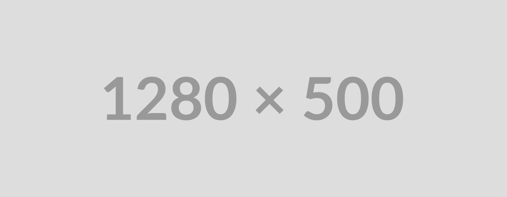

Best Websites for UI/UX Design Inspiration
Finding strong references quickly can save hours in the design process. Whether you are shaping a SaaS dashboard, refining a mobile onboarding flow, or exploring a more experimental visual direction, the right inspiration library helps you move from blank canvas to clear ideas much faster.
This roundup brings together some of the most useful websites recommended across design communities. Instead of relying on one source for everything, it helps to build a small inspiration stack: one for polished visual references, one for real product flows, one for design systems, and one for learning.
Category:
Posted by:
Admin
Posted on:
March 15, 2026
Quick links to every resource
Here are the websites mentioned in this article, grouped by use case and opened as external links.
Curated Inspiration
SaaS and B2B
Mobile UI/UX
UX Flows
Landing Pages
Experimental
Tools and Assets
1. Curated design inspiration for polished interfaces
For clean and high-quality interface inspiration, Curated Design, Godly Website, Minimal Gallery, and SiteInspire are a strong starting point. These platforms are useful when you want to study composition, typography, spacing, visual rhythm, and how top-tier sites turn a simple layout into something memorable.
2. SaaS and B2B product references that feel practical
SaaS products need clarity more than decoration, which is why Saaspo, Website Vice, and Ruixen UI stand out. They are especially helpful for dashboards, settings pages, pricing tables, product marketing sections, and other layouts where business goals and usability have to work together.

3. Mobile UI inspiration that shows real patterns
When your focus is mobile design, Mobbin, Pttrns, and Handheld Design are excellent resources. They help you compare how leading apps handle navigation, onboarding, empty states, profile screens, and repeated interaction patterns across different categories.
4. UX flows and user journeys for deeper product thinking
Visual inspiration is useful, but flow libraries are where you can understand product decisions. Page Flows, UXArchive, and Nicelydone are valuable because they show how real products guide users through signup, checkout, upgrade prompts, and retention journeys. These references are especially useful when you need to design not just a screen, but a complete experience.
5. Landing page inspiration that supports conversion
Lapa Ninja, One Page Love, and SaaS Landing Page are strong picks for landing page design. They are useful when you need examples of hero sections, trust-building blocks, feature storytelling, social proof, and call-to-action placement that can improve conversion without making the page feel crowded.
6. Design systems and component libraries worth studying
Some of the best UI/UX inspiration comes from systems built to scale. Material Design, Apple Human Interface Guidelines, and Atlassian Design System are great references for component behavior, hierarchy, accessibility, and consistency. These are less about trends and more about building products that remain usable as they grow.
7. Educational resources that sharpen design judgment
NNgroup Articles, Smashing Magazine, and the Inclusive Design 24 YouTube channel are useful when you want to understand why certain design decisions work. Inspiration is stronger when it is backed by research, accessibility thinking, and practical experience, and these resources help bridge that gap.
8. Experimental platforms for pushing creative direction
If you want to break away from safe layouts, browse Httpster, Brutalist Websites, and Hoverstat.es. These sites are perfect for studying unconventional structure, bold visual identity, motion ideas, and editorial-style design approaches that can spark more original concepts.
9. Tools and asset libraries for faster execution
UI8, Collect UI, and Muzli can help when you need component ideas, asset packs, or a steady stream of fresh references. They are especially useful during early concept development when speed matters and you want a wider range of examples before narrowing your direction.
Final thoughts
The best inspiration stack depends on what you are designing. For polished web design, start with curated galleries. For mobile products, lean on real app pattern libraries. For stronger UX decisions, spend time with flow references and design systems. The goal is not to copy what already exists, but to study strong examples, understand the reasoning behind them, and turn that insight into better original work.